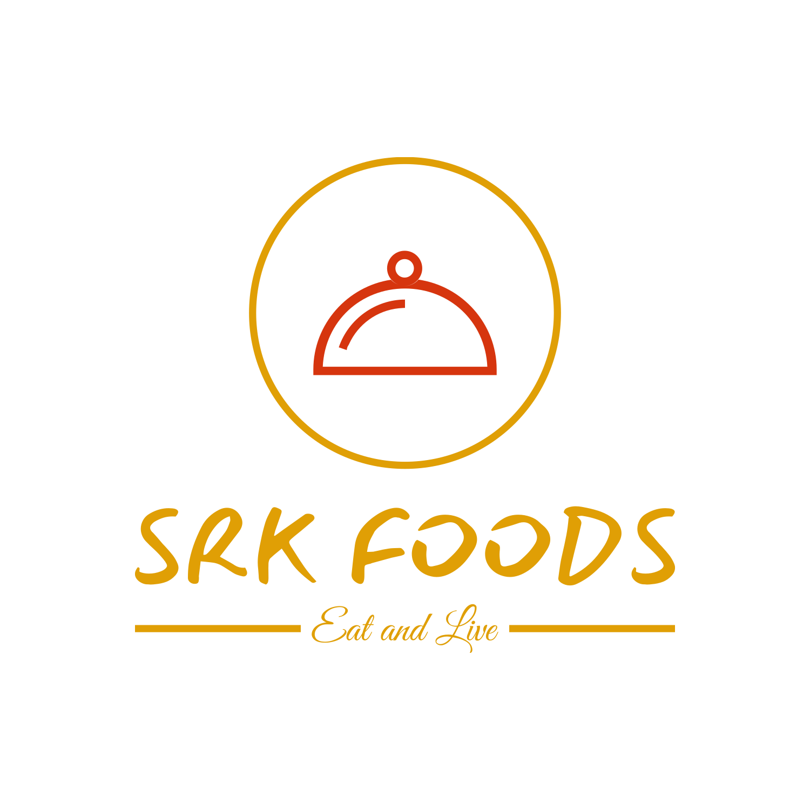

Contact no:
SRK Foods: 1234567891
EmailId: abc@gmail.com
place: parbhani
|  | SRK Foods is an Indian online food ordering and delivery platform. Founded in 2018, SRK Foods is headquartered in parbhani and operates in more than 500 Indian cities as of September 2021.Besides food delivery, the platform also provides on-demand grocery deliveries under the name Instamart, and same-day package delivery service called SRK Foods Genie. |
|
Type :Private
Industry:Online food ordering Founded :August 2018; 5 years ago Founders: Net income Decrease ₹−3,629 crore (US$−450 million) (FY22)[1] Owners |
|
Contact no:
SRK Foods: 1234567891 EmailId: abc@gmail.com place: parbhani |